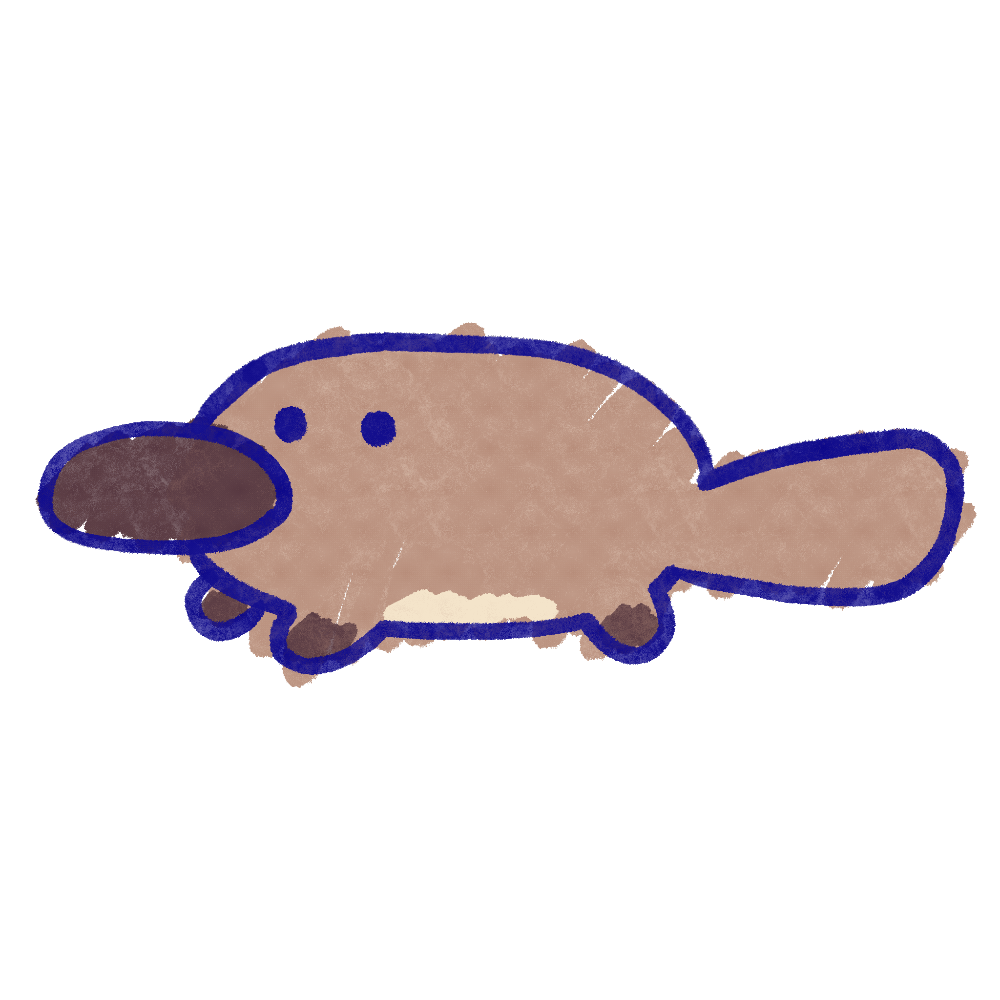

<html>
<head>
    
  <link rel="stylesheet" href="https://fonts.googleapis.com/css2?family=Nanum+Pen+Script&display=swap">
  <style>
    body {
      font-family: "Nanum Pen Script", cursive;  
      background-image: url("img/platypus_bg.png");
      background-repeat: no-repeat;
      background-size: 115% 100%;
    }
   </style>
  </head>
</html>
<header>
</header>

<audio src="audio/animalese_Platypus.mp3"></audio>
<audio src="audio/backgroundmusic.mp3" autoplay loop></audio>


<div style="position: relative;">
  <h1 style="font-size: 80px; position: absolute; top: 1; left: 50; z-index: 1;">Platypus is very happy!</h1>
  <p style="font-size: 50px; position: absolute; top: 110; left: 50; z-index: 1;">Purr...! Thank you for the pat! My fur seems even smoother! <br> In return, I want to give you a clue to find my good friend Koala:</p>
    <p style="font-size: 50px; position: absolute; top: 280; left: 50; z-index: 1;"> <br>Koala can be found near its favorite gum trees, <br> But it was tricked and is quite displeased, <br>The leaves are there but Koala can't eat,<br> look for the mural just along Bowen street.</p>
  
</div>

<footer>
    
  <p style="font-size: 40px; position: absolute; top: 1840; left: 50; z-index: 1;">Copyright © 2023 Walkabout
      <br>All rights reserved.</p>
</footer>